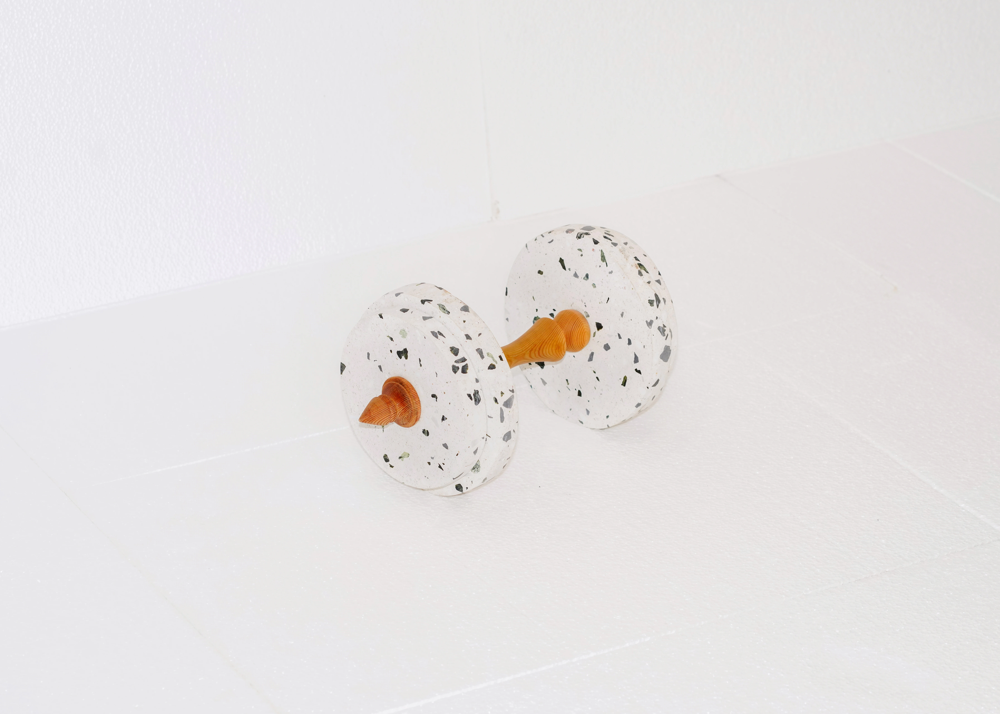
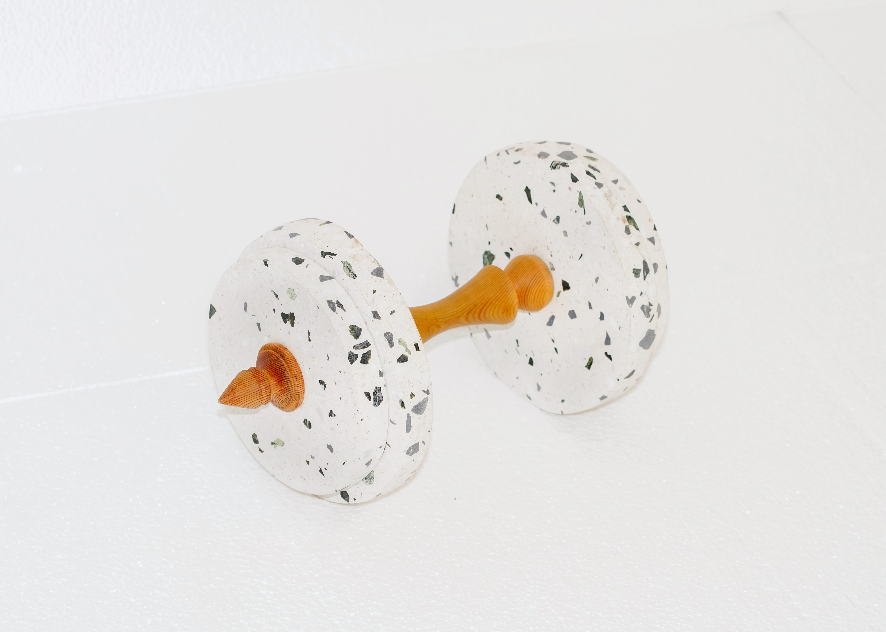
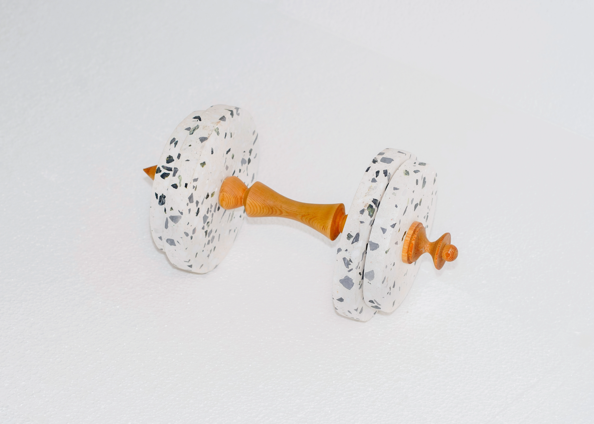
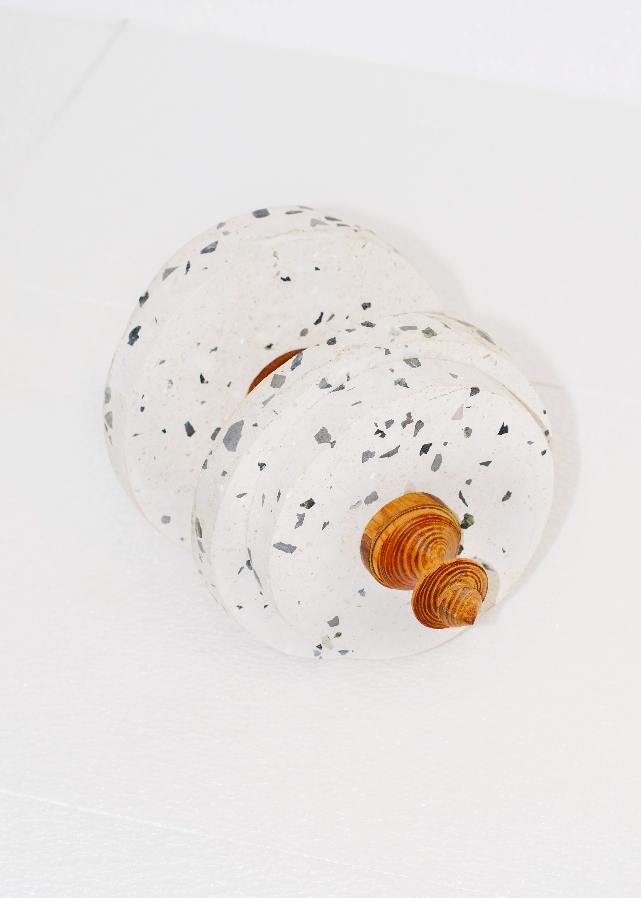
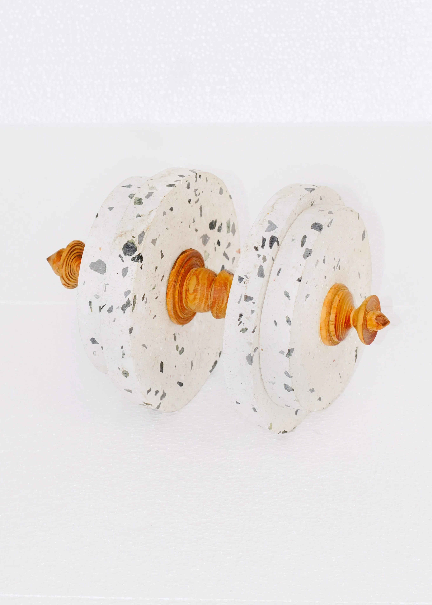
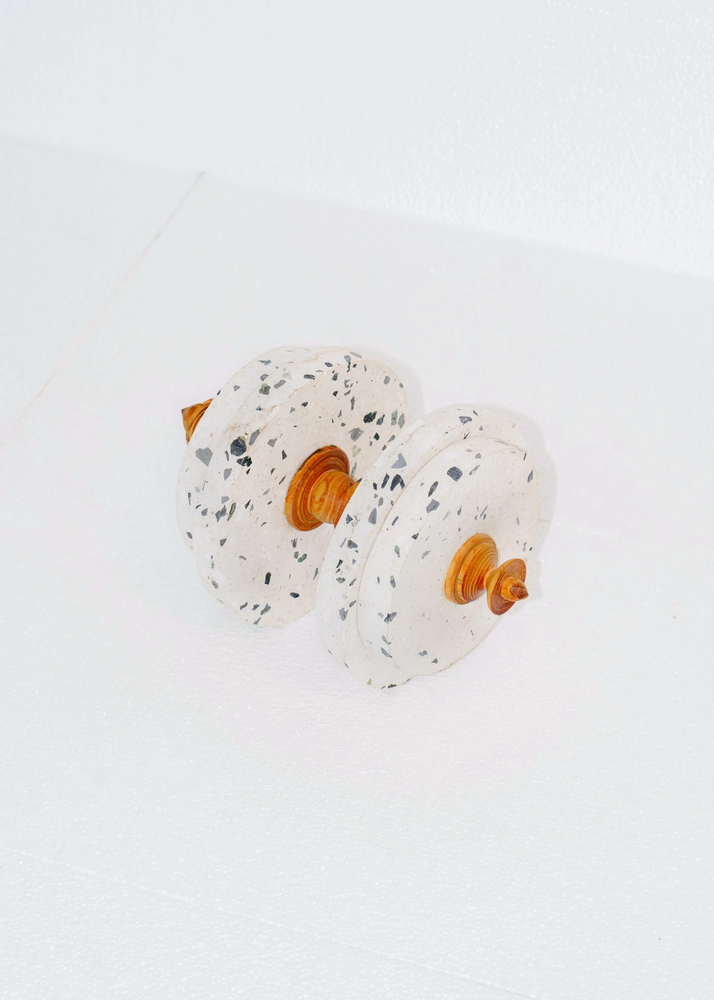
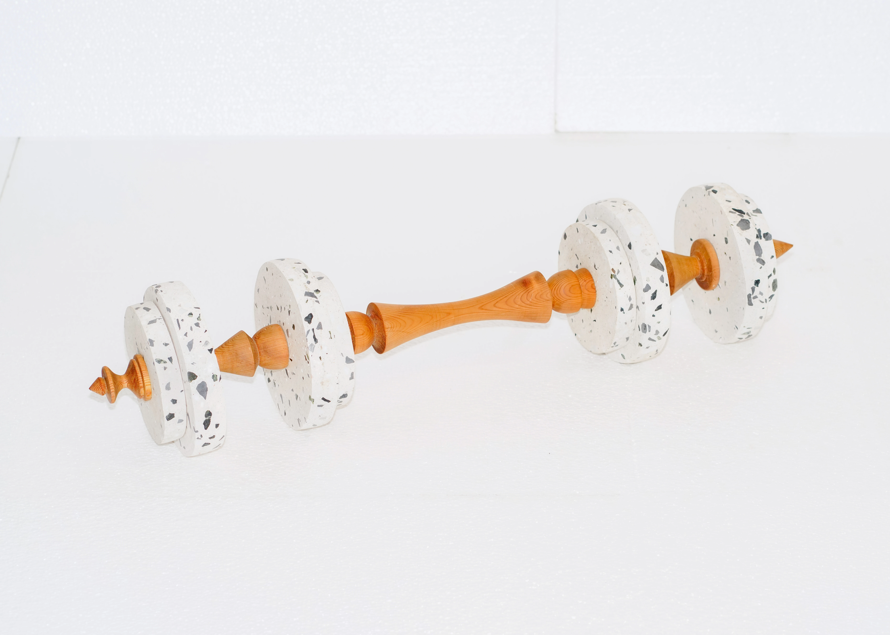
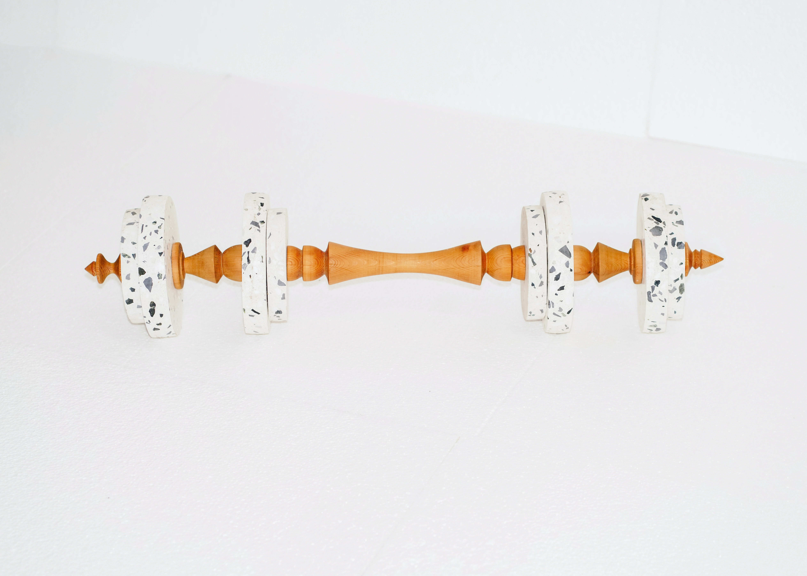

Sweat, lack and elevated grounds
2022But behind all action there was a protest, because all doing meant leaving from in order to arrive at, or moving something so that it would be here and not there, or lifting the floor instead of rising from it; in other words every act entailed the admission of a lack, of a reduction, of the inadequacy of the present moment. It was better to withdraw, because withdrawal from action was the protest itself and not its mask. To do nothing requires to do a lot.







